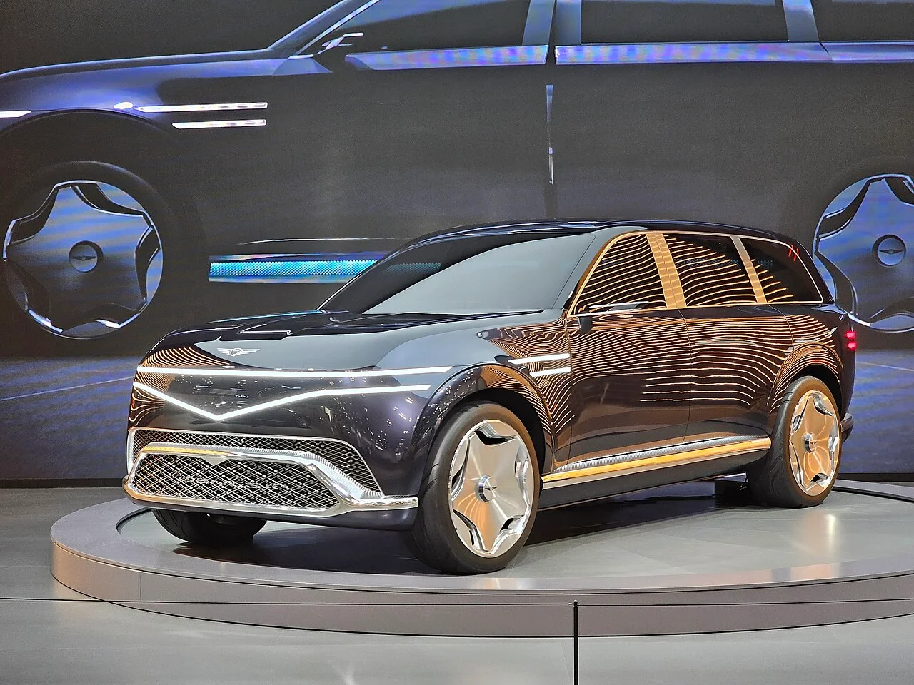
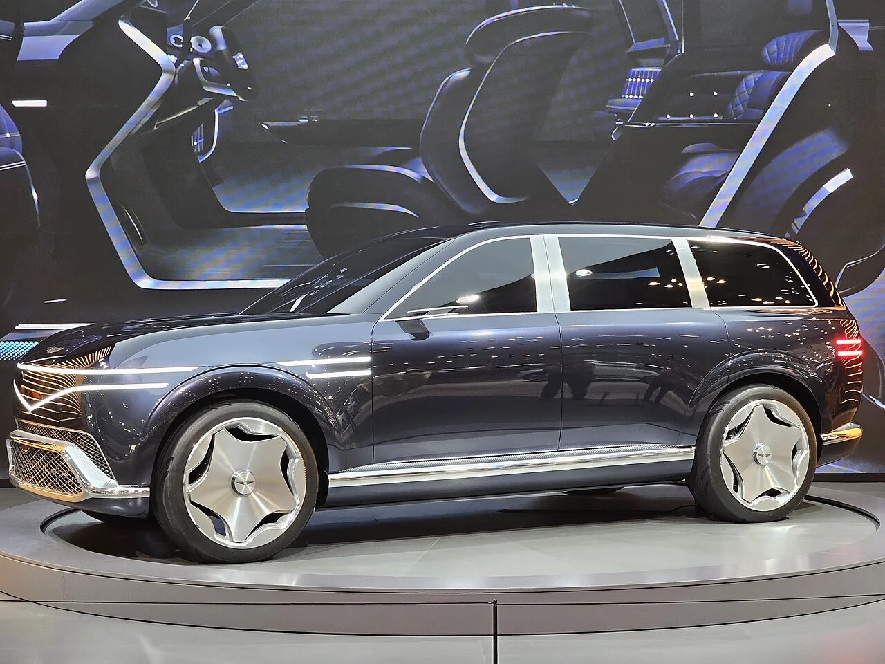
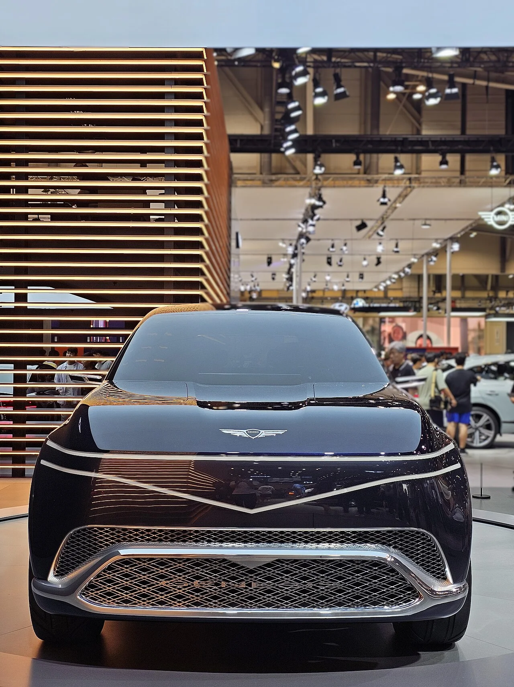

▲ GV90은 네오룬 콘셉트의 설계 철학을 양산으로 옮긴 모델이다 ⓒ Wikimedia Commons
2026년 8월 19일, 샌프란시스코 팰리스 오브 파인 아츠. GV90 월드 프리미어가 끝난 직후였습니다.
정의선 회장이 럭셔리를 이렇게 정의했습니다. "자신이 지불한 가격보다 훨씬 더 큰 가치를 느끼고 그것이 본인의 인생에 도움이 된다면 그게 진정한 럭셔리."
가격이 아니라 체감가치로 기준을 옮긴 발언입니다.
1. 가격이 아니라 체감가치
럭셔리 브랜드가 스스로를 정의하는 방식은 대체로 둘 중 하나입니다.
| 방식 | 기준 | 전형적 표현 |
|---|---|---|
| 희소성 기반 | 가격·생산량·대기 기간 | "연간 OO대만 만듭니다" |
| 체감가치 기반 | 고객이 느끼는 만족 | "지불한 값보다 큰 가치" |
정의선 회장의 발언은 두 번째입니다. 그리고 이건 전략적으로 자연스러운 선택입니다.
제네시스는 희소성으로 겨룰 수 있는 위치가 아닙니다. 롤스로이스나 벤틀리처럼 100년 넘게 쌓인 역사가 없고, 미국에서 2025년 8만2,331대를 팔았습니다. 희소한 브랜드가 아닙니다.
대신 같은 값에 더 많은 것을 주는 방식으로 자리를 잡아왔습니다. 이 발언은 그 노선을 브랜드 철학으로 공식화한 것으로 읽힙니다.
2. 이 정의의 위험
다만 체감가치 기반 정의에는 구조적 함정이 있습니다.
| 구분 | 내용 |
|---|---|
| 강점 | 신규 브랜드가 빠르게 고객을 확보할 수 있다 |
| 강점 | 재구매·추천으로 이어지기 쉽다 |
| 약점 | "가성비 좋은 럭셔리"라는 인식에 갇힐 수 있다 |
| 약점 | 가격을 올리는 순간 논리가 흔들린다 |
| 약점 | 중고 잔가가 낮으면 "가치"라는 주장이 약해진다 |
마지막 항목이 실질적입니다. 럭셔리 브랜드의 체감가치는 결국 되팔 때의 값으로도 검증됩니다. GV90처럼 브랜드 상단에 놓이는 모델일수록 이 검증이 엄격해집니다.

▲ GV90은 브랜드 상단에 놓이는 만큼 잔가 검증도 엄격해진다
3. "걱정을 많이 했다"는 말
회장이 개발 과정의 어려움을 공개적으로 언급하는 것은 흔치 않습니다.
"풀지 못한 난제도 많았고 우리가 처음 시도하는 부분도 있어 다들 걱정을 많이 했다"는 발언은 GV90의 구조를 알면 이해가 됩니다.
| 기술 | 난점 |
|---|---|
| 독립 개폐형 히든 B필러 코치도어 | 기둥 없이 측면 충돌 하중을 견뎌야 한다 |
| 루프 에어백 | 세계 최초 — 전개 방향과 타이밍 설계가 전례 없음 |
| eMP 플랫폼 | 초대형 전동화 전용 구조 |
| 3톤이 넘는 공차중량 | 서스펜션·제동·조향 전반의 재설계 |
B필러를 없애면 문이 무거워지고 차체 보강이 필요해집니다. 그 결과가 GV90의 총중량 3,650kg(6인승 기준)입니다. 무게가 늘면 주행거리와 제동에 부담이 갑니다. 하나를 얻기 위해 여러 곳을 다시 계산해야 하는 구조입니다.
4. EREV 언급이 갖는 무게
"EREV 쪽도 많이 해볼 생각"이라는 발언이 이 자리에서 나왔습니다.
| 방식 | 구조 | 특징 |
|---|---|---|
| EV | 배터리 + 모터 | 충전 인프라 의존 |
| 하이브리드 | 엔진 + 모터, 엔진이 바퀴를 굴린다 | 연비 개선 |
| EREV | 엔진 + 모터, 엔진은 발전만 한다 | 배터리를 줄이고 주행거리 불안 해소 |
EREV는 최근 중국에서 빠르게 커진 방식입니다. 리 오토가 대표적이고, 샤오미도 진입을 예고했습니다. 배터리 원가를 줄이면서 충전 스트레스를 없애는 절충안입니다.
현대차그룹이 이 방식을 공식 언급했다는 것은, 순수전기 일변도 전략에서 물러섰다는 뜻이기도 합니다. 미국과 유럽에서 전기차 수요 증가세가 둔화된 흐름과 무관하지 않습니다.
여기에 전고체 배터리 연구를 계속한다는 언급이 함께 붙었습니다. 단기는 EREV와 하이브리드로 버티고, 장기는 전고체로 넘어가겠다는 이중 구조입니다.

▲ B필러가 없는 측면 구조. GV90이 처음 시도한 기술 중 하나다
5. 왜 샌프란시스코였나
공개 장소가 팰리스 오브 파인 아츠였다는 점도 읽을 거리입니다. 1915년 파나마-태평양 만국박람회를 위해 지어진 건축물입니다.
자동차 브랜드가 신차를 공개하는 장소는 메시지의 일부입니다. 컨벤션 센터가 아니라 문화 건축물을 택한 것은, GV90을 기술 제품이 아니라 문화적 대상으로 놓겠다는 의도로 읽힙니다.
같은 시기 캘리포니아 샌브루노에 85번째 전용 전시장이 열렸습니다. 브랜드 상단 모델의 공개와 지역 거점 확충이 한 묶음으로 진행된 셈입니다.

▲ 공개 장소로 컨벤션 센터가 아닌 문화 건축물을 택했다
6. 정리
정의선 회장이 GV90 월드 프리미어 직후 럭셔리를 고객 체감가치로 재정의했습니다. "지불한 가격보다 훨씬 더 큰 가치를 느끼고 그것이 본인의 인생에 도움이 된다면 그게 진정한 럭셔리"라는 발언입니다.
개발 과정에 대해서는 "풀지 못한 난제도 많았고 처음 시도하는 부분도 있어 다들 걱정을 많이 했다"고 밝혔습니다. GV90에는 독립 개폐형 히든 B필러 코치도어와 세계 최초 루프 에어백이 들어갔습니다.
전동화 전략으로는 EV·하이브리드·EREV 다층화와 전고체 배터리 연구 지속을 제시했고, "EREV 쪽도 많이 해볼 생각"이라고 덧붙였습니다.